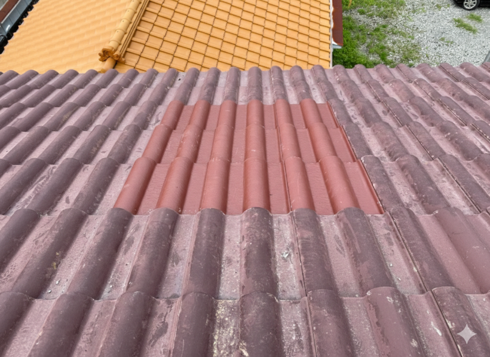

瓦のズレが雨漏りを引き起こす理由｜たった1枚のズレが家全体を傷める
公開日：2026年2月18日
瓦が1枚ズレただけで雨漏りする？実は、たった1枚のズレから連鎖的に劣化が広がります。放置すると修理費が高額に…早期発見のポイントを解説。

瓦の交換と修理の実例
こんな状況に心当たりありませんか？
- 台風の後、瓦が1〜2枚ズレているのに気づいた
- 「1枚くらいなら大丈夫」と放置している
- 雨の日に天井から水がポタポタ…
- 「瓦屋根は丈夫だから大丈夫」と思っている
実は、たった1枚の瓦のズレが、家全体を傷める原因になります。
瓦のズレ、なぜ雨漏りにつながるのか？
多くの方が「瓦は重なっているから、1枚くらいズレても大丈夫」と考えています。しかし、これが大きな誤解です。
瓦のズレ → 雨漏りのメカニズム
1枚の瓦がズレる
台風や地震、経年劣化で瓦が本来の位置からズレます。
隙間ができる
ズレた瓦と隣の瓦の間に隙間が発生。本来防水するはずの重なりがなくなります。
雨水が侵入
隙間から雨水が瓦の下の防水シート（ルーフィング）に直接当たります。
防水シートが劣化
本来、瓦で守られているはずの防水シートが直射日光や雨に晒され、急速に劣化します。
雨漏り発生
防水シートに穴が開くと、屋根裏→天井→室内へと雨水が侵入します。
つまり、「たった1枚のズレ」が防水システム全体を破壊してしまうんです！
瓦のズレを見つける方法
瓦のズレは、地上から目視で確認できることがあります。以下のポイントをチェックしてください。
瓦の並びが不揃い
遠目から見て、瓦の並びが波打っていたり、一部だけ浮いて見える場合はズレています。
強風の後に確認
台風や強風の後は、瓦がズレやすいタイミング。必ず目視確認を。
2階から屋根を確認
2階の窓や隣の建物から屋根を見下ろすと、ズレが分かりやすいです。
屋根に登らない
危険なので、絶対に自分で屋根に登らないでください。プロに依頼しましょう。
放置すると修理費が高額になる理由
瓦のズレを放置すると、修理範囲がどんどん広がります。
修理費用の比較
早期発見（ズレのみ）
3万円〜10万円
ズレた瓦を元に戻すだけ
防水シート劣化開始
20万円〜50万円
防水シートの部分補修が必要
雨漏り発生後
50万円〜150万円
屋根裏・天井・壁の補修も必要
よくある質問
瓦が1枚ズレただけで本当に雨漏りしますか？
すぐには雨漏りしませんが、防水シートが劣化するスピードが速まります。通常10〜20年持つ防水シートが、数年で穴が開くこともあります。
自分で瓦を戻すことはできますか？
絶対におすすめしません。屋根は非常に危険で、転落事故が多発しています。また、瓦の並びには専門知識が必要で、素人が触ると逆に悪化させることもあります。
台風の後、必ず点検すべきですか？
はい、強くおすすめします。台風や強風の後は瓦がズレやすいタイミング。目視で確認し、気になる箇所があればプロに点検を依頼しましょう。
まとめ
- 瓦1枚のズレが防水システム全体を破壊する
- 早期発見なら3〜10万円、放置すると150万円に
- 台風の後は必ず目視確認を
- 自分で屋根に登らない、プロに点検依頼を
瓦のズレ、放置していませんか？
無料点検で屋根の状態をチェック！
早期発見で修理費を大幅に節約できます。
📍 対応エリア：町田市・横浜市青葉区・川崎市麻生区・稲城市・日野市